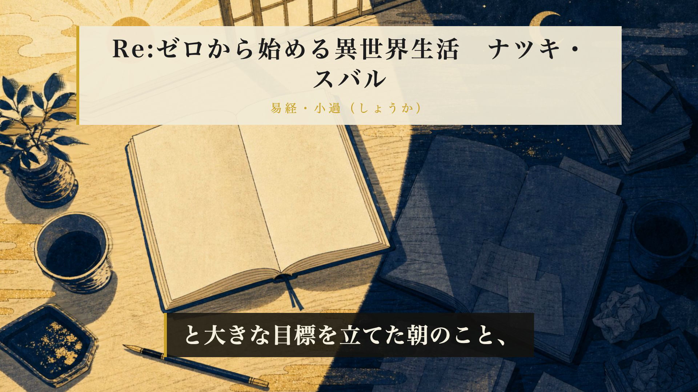
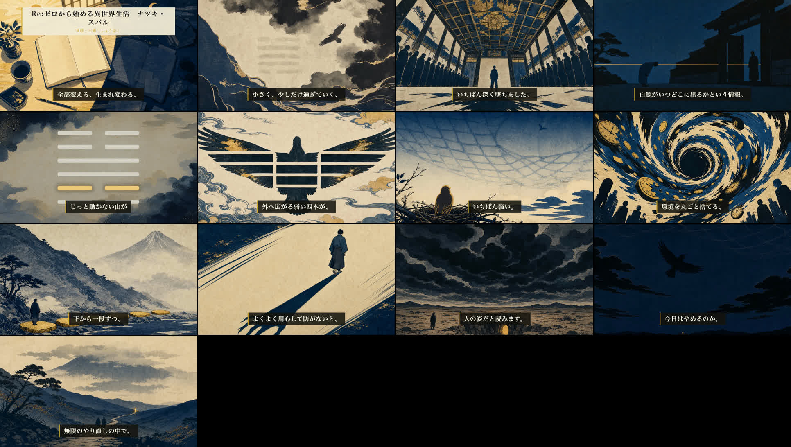

ESSAY EPISODE ／ 通し視聴ゲート（本人承認・final-video）
第40話 レンダ完了 — 通し視聴をお願いします
Re:ゼロ（ナツキ・スバル）× 第62卦 小過 ・10分10秒・32シーン
TL;DR
・レンダ 610秒/853MB（Mac mini・BGM頭出し修正後の再レンダ）・mix preflight: PASS
・H52オーバーレイ: 冒頭0-8秒に「Re:ゼロ×ナツキ・スバル／易経・小過」が載っていることをフレームで確認済み
・identity監査: 全カット「不明」＝PASS ／ 六爻図: 001100・二爻金強調（決定論・静止画）
本編プレビュー（720p・スマホ再生可）
冒頭3秒（H52 約束の確認）

全編サンプル（13点・5s〜590s）

機械検証
| ゲート | 結果 |
|---|
| essay-preflight script / timing / promise / visuals | すべてPASS（警告0〜1） |
| fork独立採点（台本96・シーン画像92） | 閾値90超え |
| identity監査（ブラインド・全11対象カット） | 全カット「不明」＝PASS・安全弁4項目false |
| mix preflight（尺・ピーク・幕間BGM・シーン境界の黒落ち） | PASS — 尺610.4s／ピーク-4.0dB／幕間BGM-35.5dB（基準帯中央）／黒落ち0（31境界検査・暗い絵の正常表示4件をV字判定でスキップ・全4件フレーム目視済み） |
▶ 通し視聴して判断してください
A：公開OK（→ タイトル3案→サムネ→ショート→予約 07-19 04:00 の順で自走）
B：直しを指定（シーンIDと一言）
上の埋め込みは720pプレビュー。原本はMacの releases/060/ep40_full.mp4（1080p・853MB）。